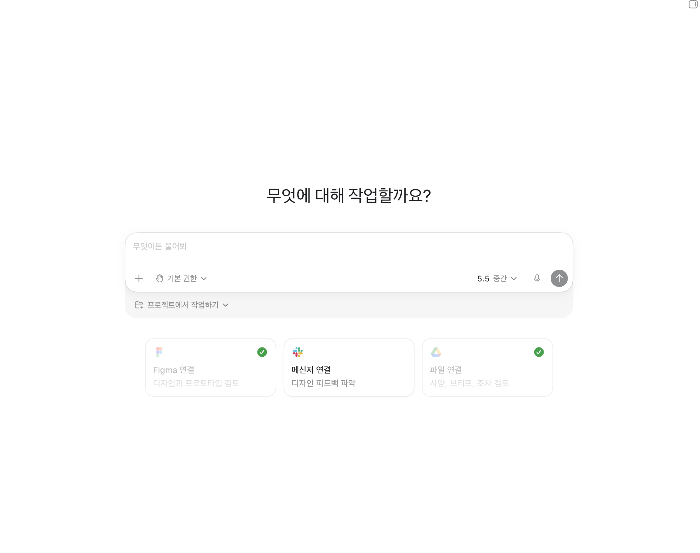

Fridge App
Design System
AI와 함께 모바일 냉장고 앱의 화면을 만들고, 반복 UI를 컴포넌트와 토큰 구조로 정리해 운영 가능한 디자인 시스템으로 확장한 케이스 스터디입니다.

AI와 함께 운영 가능한 시스템을 만들었습니다

이 케이스 스터디는 AI와 함께 모바일 냉장고 앱의 화면과 디자인 시스템을 구축한 작업입니다. AI가 화면을 대신 만들어줬다는 결과보다, 디자인 시스템을 정의하고 반복 적용을 자동화하며 컴포넌트, 토큰, 다크모드까지 운영 가능한 구조로 확장한 과정에 초점을 두었습니다.
초기 컨셉을 모바일 앱 화면으로 구체화했습니다
냉장고 속 식재료를 관리하고 남은 재료를 기반으로 레시피를 추천하는 모바일 앱 컨셉에서 출발했습니다. My Fridge, Ingredient Detail, Recipe Recommendations 화면을 먼저 제작하며 서비스의 핵심 흐름과 정보 구조를 확인했습니다.
핵심 화면을 기준으로 시스템화 범위를 확인했습니다
My Fridge 화면을 중심으로 light/dark 상태에서 컴포넌트와 토큰이 어떻게 적용되는지 비교했습니다. 화면 단위의 완성도와 시스템 단위의 재사용성을 함께 확인했습니다.
반복 UI를 Figma 컴포넌트로 분리했습니다
화면에서 반복되는 CTA Button, Chip, Tab, Gauge Bar, Bottom Navigation, Ingredient Card를 컴포넌트로 분리했습니다. 이후 Header Add/Menu, Ingredients Search 같은 액션 버튼 컴포넌트도 추가해 화면 확장 시 같은 규칙으로 사용할 수 있도록 구성했습니다.
상태와 속성을 variants로 관리했습니다
각 컴포넌트는 단일 형태로 고정하지 않고 type, size, state, percent, active 등의 component variants를 구성했습니다. 버튼, 탭, 칩, 게이지처럼 반복적으로 변하는 UI를 variants로 관리해 화면마다 새로 만드는 대신 조건에 맞춰 재사용할 수 있게 했습니다.
Primitive / Semantic variable 구조를 만들었습니다
색상과 의미가 직접 섞이지 않도록 Primitive / Semantic variable 구조를 제작했습니다. 화면에 사용되는 색상은 semantic token을 통해 연결하고, 실제 색상 값은 primitive 단계에서 관리해 테마 확장과 유지보수가 가능한 구조로 정리했습니다.
변수와 컴포넌트를 실제 화면에 자동 적용했습니다
정의한 변수와 컴포넌트를 실제 화면에 자동 적용하는 흐름을 만들었습니다. 새 액션 버튼 컴포넌트를 추가할 때도 light/dark 화면에 동시에 반영되도록 구성해, 반복 수정에 쓰이는 시간을 줄이고 변경 가능성을 높였습니다.
단순 반전이 아닌 명도 위계로 다크모드를 확장했습니다
Semantic / Color 구조에 Dark mode를 확장했습니다. Toss 컬러 시스템 글을 참고해 라이트 컬러를 단순히 반전하지 않고, 배경과 표면, 강조 색상, 텍스트의 명도 위계를 기준으로 dark color remapping을 진행했습니다.
AI를 디자인 시스템 협업 파트너로 사용했습니다
이 작업에서 AI는 단순한 시각 생성 도구가 아니라, 디자인 시스템을 구조화하고 반복 적용을 자동화하며 변경 가능성을 높이는 협업 파트너로 사용되었습니다. 화면 제작 이후 컴포넌트, variants, variables, dark mode까지 연결하며 AI 기반 작업을 운영 가능한 디자인 프로세스로 확장했습니다.